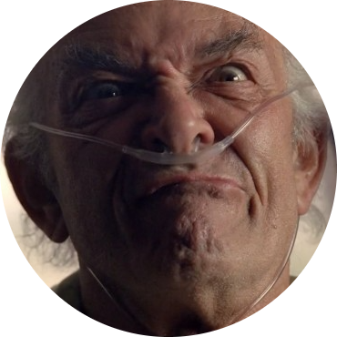

Better Call Saul is an American crime and legal drama television series created by Vince Gilligan and Peter Gould. Part of the Breaking Bad franchise, it is a spin-off, prequel and sequel to Gilligan's previous series, Breaking Bad. Set primarily in the early-mid 2000s in Albuquerque, New Mexico, the series develops Jimmy McGill (Bob Odenkirk), an earnest lawyer and former con artist, into an egocentric criminal defense attorney known as Saul Goodman. Also shown is the moral decline of former police officer Mike Ehrmantraut (Jonathan Banks), who becomes a violent fixer for drug traffickers to support his granddaughter and her widowed mother. The show premiered on AMC on February 8, 2015, and concluded on August 15, 2022, after six seasons consisting of 63 episodes. At the start of the series, Jimmy struggles financially while he mostly works on court-appointed cases as a public defender. His romantic interest and former colleague, Kim Wexler (Rhea Seehorn), is an attorney at Hamlin, Hamlin & McGill (HHM), a law firm co-owned by Jimmy's brilliant but unwell brother, Chuck McGill (Michael McKean) and Chuck's law partner, Howard Hamlin (Patrick Fabian). After hiring Jimmy as legal representation, Mike provides advice and security for Nacho Varga (Michael Mando), an intelligent drug dealer who later becomes a mole for Gus Fring (Giancarlo Esposito), a drug lord and legitimate businessman as owner of the Los Pollos Hermanos fast food establishment. Their operations are disrupted by members of the murderous Salamanca family, including Lalo Salamanca (Tony Dalton). Odenkirk, Banks, and Esposito reprise their roles from Breaking Bad, as do many others who make guest appearances. Better Call Saul has received critical acclaim, with particular praise for its acting, characters, writing, direction, and cinematography; many critics have called it a worthy successor to Breaking Bad and one of the greatest television series of all time, with some deeming it superior to its predecessor.[5][6][7] It has garnered many nominations, including a Peabody Award, 46 Primetime Emmy Awards, 15 Writers Guild of America Awards, 14 Critics' Choice Television Awards, six Screen Actors Guild Awards, and four Golden Globe Awards. At the time of its airing, the series premiere held the record for the highest-rated scripted series premiere in basic cable history
 | Saul Goodman49 years old |
 | Gustavo Fring44 years old |
 | Mike Ehrmantraut70 years old |
 | Walter White52 years old | Jesse Pinkman25 years old | |||||||
|---|---|---|---|---|---|---|---|---|---|---|---|---|---|---|---|
 | Lalo Salamanca44 years old |  | Hector Salamanca70 years old |
 | Marco Salamanca26 years old | Leonel Salamanca26 years old | Hank Schrader44 years old | ||||||||
 | Nacho Varga32 years old |
 | Kim Wexler42 years old |
 | Howard Hamlin48 years old | Chuck Mcgill59 years old |
 | Eladio Vuente50 years old |
| Better Call Saul | ||
|---|---|---|
| Actors | Charaters | Age |
| Bob Odenkirk | Saul Goodman | 49 years old |
| Gian Esposito | Gustavo Fring | 44 years old |
| Jonathan Banks | Mike Ehrmantraut | 70 years old |
| Bryan Cranston | Walter White | 52 years old |
| Aaron Paul | Jesse Pinkman | 25 years old |
| Tony Dalton | Lalo Salamanca | 44 years old |
| Mark Margolis | Hector Salamanca | 70 years old |
| Daniel Moncada | Marco Salamanca | 26 years old |
| Luis Monacada | Leonel Salamanca | 26 years old |
| Dean Norris | Hank Schrader | 44 years old |
| Michael Mando | Nacho Varga | 32 years old |
| Rhea Seehorn | Kim Wexler | 42 years old |
| Patrick Fabian | Howard Hamlin | 48 years old |
| Michael Mckean | Chuck Mcgill | 59 years old |
| Steven Bauer | Eladio Vuente | 50 years old |
| Total Characters | 15 | |